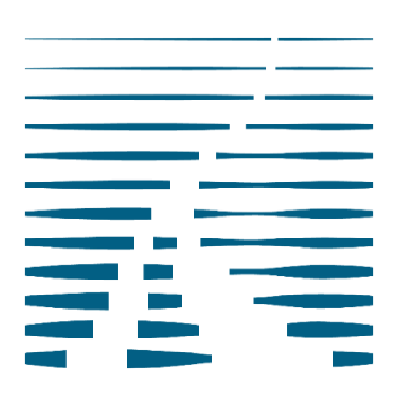

!!!Bench: Which Model Loves Saying “!” the Most?
18th Nov 2026
Hi, I'm Haoquan, a second-year PhD student at The Chinese University of Hong Kong, advised by Weiyang Liu. I'm also a research intern at ByteDance Seed, working with Haodong Duan on understanding foundation models through rigorous evaluation. Previously, I was an intern at Shanghai AI Lab.
My research focuses on how models represent and interact with the visual world. Through SGP-Gen and PixelBench, I explore vision as text and how training on textual representations of visual content can improve multimodal understanding and generation.
We also study agentic and active vision: how models can use code and tools to actively gather and manipulate visual information as they reason. We explore how to build, train, and evaluate these capabilities through PyVision, PyVision-RL, and TIR-Bench.
Also exploring what’s next.
